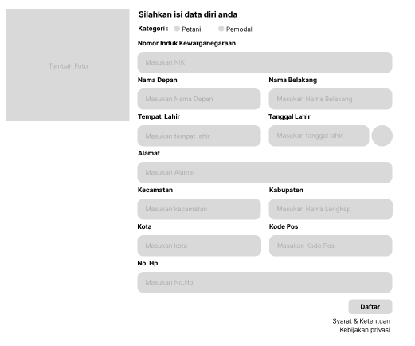
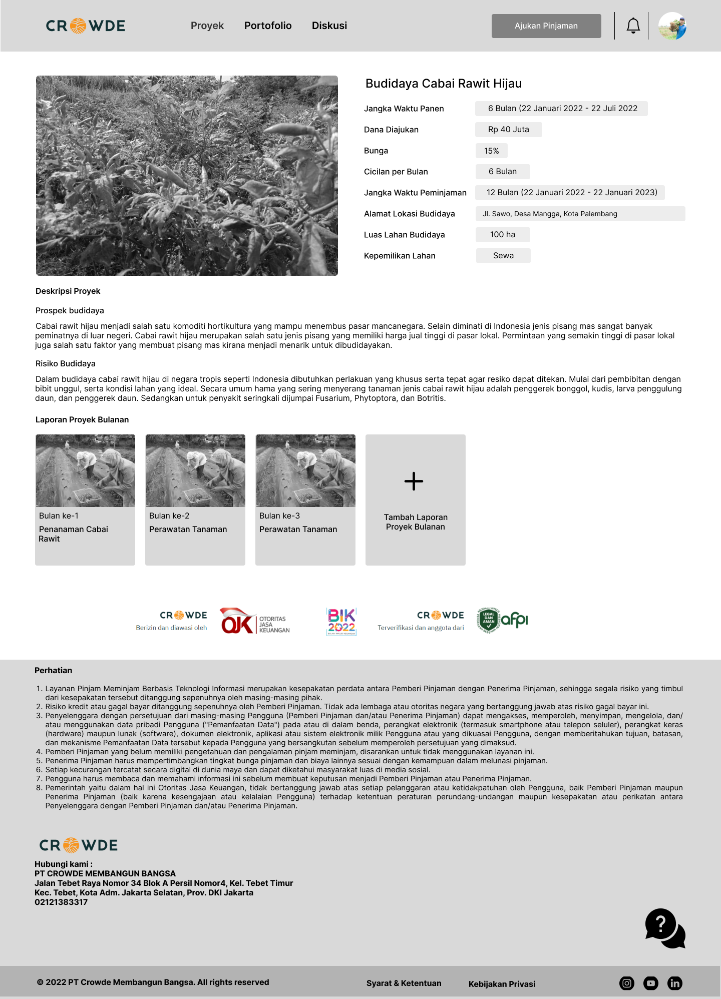
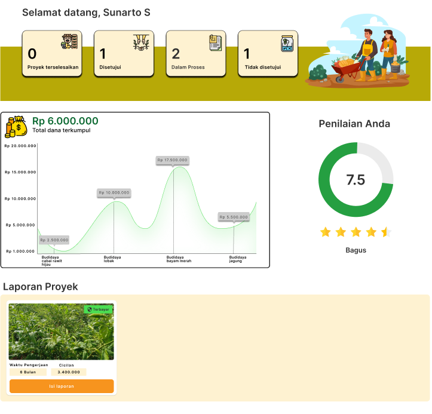

Ringkasan Proyek
Jenis Projek
Projek Tim (Studi Independen)
Peran Saya
UI/UX Designer (Menu Pengajuan Pinjaman dan Proyek)
Linimasa
8 Minggu (November - Desember 2022)
Tools
Figma, Zoom, Figjam
Masalah (The Problem)
Petani di Indonesia seringkali kesulitan mendapatkan akses permodalan dari lembaga keuangan formal karena berbagai kendala. Di sisi lain, banyak investor di perkotaan yang ingin berinvestasi pada sektor riil yang berdampak sosial, namun tidak memiliki akses atau informasi yang memadai.
Tujuan: Menciptakan sebuah platform digital P2P lending yang aman, transparan, dan mudah digunakan untuk menjembatani kesenjangan antara petani dan investor.
Proses Desain
Tantangan utama adalah mendesain untuk dua kelompok pengguna yang sangat berbeda. Saya memulainya dengan membuat dua persona utama: "Bapak Tani" yang membutuhkan kemudahan dalam pengajuan pinjaman, dan "Ibu Investor" yang memerlukan kejelasan informasi untuk berinvestasi.
1. Pemetaan Alur Pengguna (User Flow)
Saya memetakan dua alur yang terpisah alur pengajuan pinjaman untuk petani dan alur penelusuran & investasi untuk investor. Ini memastikan setiap pengalaman dioptimalkan untuk kebutuhan penggunanya masing-masing.
2. Wireframing
Fokus pada wireframe adalah kesederhanaan. Untuk petani, formulir dibuat sesingkat mungkin. Untuk investor, informasi proyek seperti bagi hasil, risiko, dan jangka waktu ditampilkan dengan sangat jelas di halaman detail proyek.
Solusi Desain
Solusi akhir adalah sebuah platform dengan dua dasbor utama. Desainnya bersih dan profesional untuk membangun kepercayaan investor, namun tetap menggunakan bahasa dan ikon yang mudah dimengerti oleh petani.
Dasbor Investor
Menampilkan ringkasan portofolio, imbal hasil, dan daftar proyek pertanian yang bisa didanai dengan filter yang mudah.
Halaman Pengajuan untuk Petani
Formulir sederhana dengan instruksi langkah-demi-langkah yang jelas, meminimalkan kebingungan saat proses pengajuan modal.

Halaman Pengajuan Proyek Petani
Halaman ini berfungsi untuk mengupdate progress pertanian secara berkala agar investor bisa dengan mudah melihat progress yang sedang terjadi.
Hasil & Pembelajaran
Prototype ini diuji ke petani muda dan beberapa petani tradisional dan hasilnya untuk petani muda bisa dengan mudah menggunakannya namun untuk petani tradisional masih perlu sedikit arahan dari orang lain untuk menggunakannya pertama kali. Tingkat adopsi di kalangan petani juga cukup baik berkat pendekatan desain yang sederhana.
Pelajaran terbesar adalah pentingnya empati mendalam saat mendesain untuk audiens yang beragam. Apa yang berhasil untuk investor tech-savvy belum tentu berhasil untuk petani. Riset dan pengujian berkelanjutan adalah kunci untuk menjembatani perbedaan tersebut.